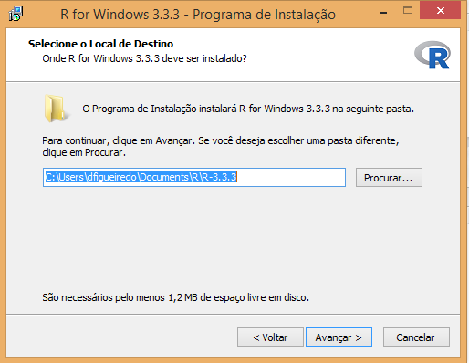
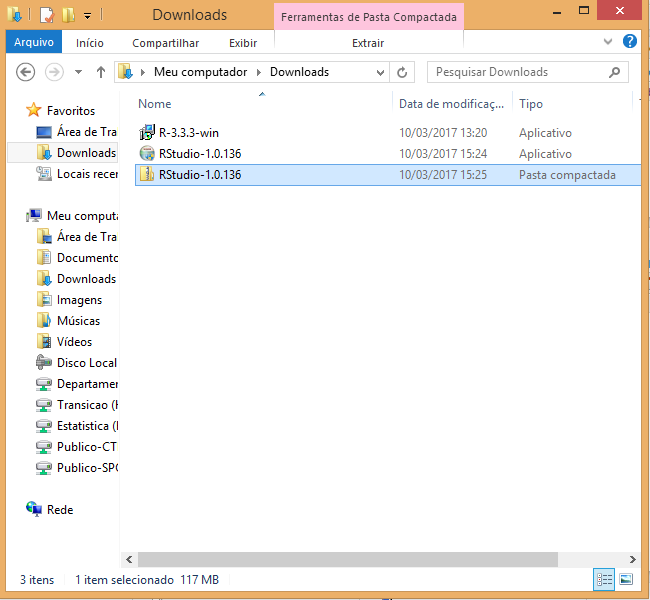
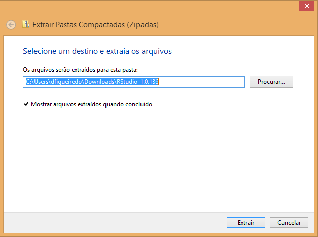
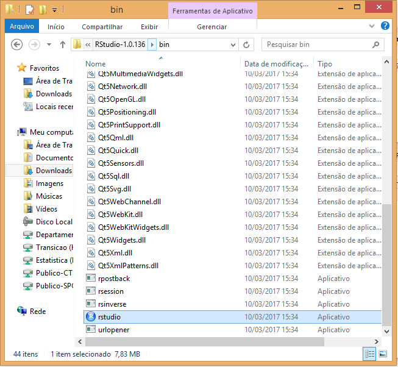
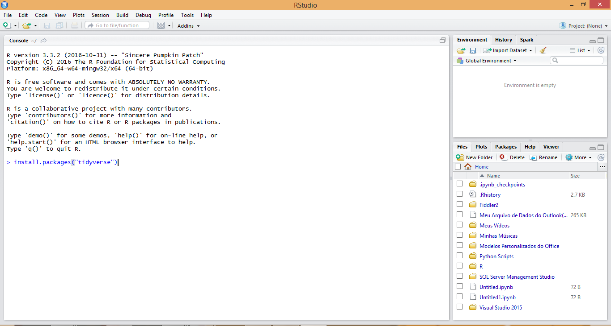

Instalacao
A seguir apresentamos tutoriais para a instalação do R e do RStudio nos principais sistemas operacionais. Também damos um exemplo de como instalar pacotes no R.
No Windows
Instalação do R
Para instalar o R no Windows, o primeiro passo é fazer o download do instalador. Para isso, entre neste link e clique em “Download R x.x.x for Windows”, em que x.x.x é o número da versão mais recente disponível.
Salve o arquivo em qualquer pasta do seu computador. No meu caso, salvei na pasta “Downloads”.

Clique no arquivo duas vezes com o botão esquerdo. Ele pedirá para você selecionar a linguagem da instalação. Escolha um idioma e clique em “OK”.
Em seguida, clique em “Avançar” até chegar na tela da imagem abaixo. Nessa etapa, você precisará escolher a pasta de instalação. Se você escolher um local que não está dentro da pasta do seu usuário, você precisará de acesso de administrador. Se escolher uma pasta dentro do seu usuário (como na imagem abaixo), não precisará.

Continue clicando em “Avançar” e, ao fim da instalação, em “Concluir”.

Pronto! O R está instalado no seu computador !
Instalação do RStudio
Agora vamos instalar o RStudio, a IDE que utilizaremos para editar e executar códigos em R. Para fazer o download, entre nesta página.

Nessa página você tem duas opções:
Se você tiver acesso administrador, baixe a versão que está na lista de Installers for Supported Platforms. Em seguida a instalação será bem simples: fazer o download, abrir o instalador e seguir as instruções, clicando no botão “Avançar”.
Se você não tiver acesso de administrador, faça o download da versão que está na lista Zip/Tarballs. (veja imagem acima)
Instalando se você for administrador
Clique duas vezes no arquivo que você baixou da página do RStudio (ver imagem abaixo) e siga as instruções de instalação.

Instalação se você não for administrador
Se você não for administrador, você deve ter feito o download de um arquivo do tipo .zip, que contém o código do RStudio. É o arquivo selecionado na imagem abaixo.

Clique com o botão direito neste arquivo e depois em Extrair Tudo conforme a imagem abaixo.

Você verá uma tela como a imagem a seguir. Não mude nada e clique em extrair. Espere o Windows completar a extração.

Agora, na pasta Downloads, a pasta que deixamos como local de extração (imagem acima), você terá uma pasta chamada: RStudio-1.0.136.
Abra essa pasta e entre na subpasta com nome bin. Em seguida, procure pelo arquivo chamado rstudio e clique duas vezes. Isso abrirá o RStudio. Recomendo fixar o programa na barra de tarefas para não ter que ficar procurando nessa pasta sempre que quiser abri-la.
Observação: se você excluir a pasta que extraímos, o RStudio irá parar de funcionar.

Instalação de pacotes do R
Com o RStudio aberto, você verá a seguinte tela. Para instalar, por exemplo, o pacote tidyverse, digite install.packages("tidyverse") no console, como na imagem abaixo, e aperte Enter. Ao rodar este código uma série de comandos aparecerá no console. No final, se não houve problemas com a instalação, você verá uma mensagem do tipo:
package ‘tidyverse’ successfully unpacked and MD5 sums checked
The downloaded binary packages are in
C:\Users\dfigueiredo\AppData\Local\Temp\Rtmpym4SPN\downloaded_packages
Ao rodar o comando acima, você instalará uma série de pacotes muito utilizados no R, como magrittr, dplyr, ggplot2, tidyr, purr, entre outros. Durante o curso, abordaremos com mais detalhes a maioria deles.
